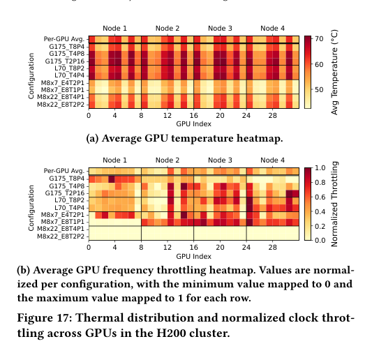

本报告由大模型自动生成，可能存在理解、归纳或数据转述错误；请以原论文为准。 Characterizing the Efficiency of Distributed Training: A Power, Performance, and Thermal PerspectiveSeokjin Go, Joongun Park, Spandan More, Hanjiang Wu, I.-Hung Wang, Aaron Jezghani, Tushar Krishna, Divya Mahajan · Proceedings of the 58th IEEE/ACM International Symposium on Microarchitecture · 2025 · 原文 · PDF 报告模型：gemini-3.1-pro-preview / high 本文《Characterizing the Efficiency of Distributed Training: A Power, Performance, and Thermal Perspective》发表于 MICRO 2025，由佐治亚理工学院的研究团队撰写。文章深入探讨了在现代大规模 GPU 集群上进行大型语言模型（LLM）分布式训练时，软件并行策略与底层物理硬件（如功耗、散热、互连带宽）之间复杂的相互作用。 背景补充与系统全貌为了理解本文，首先需要建立现代分布式机器学习的系统全貌。背景补充：在 LLM 训练中，模型通常庞大到无法放入单个 GPU（原文未定义全称）的 HBM（原文未定义全称）中，因此必须将模型和数据分布到成百上千个 GPU 上。计算过程被划分为前向传播（计算预测值）、反向传播（计算梯度）和参数更新三个阶段。为了掩盖通信延迟，软件通常会将全局的训练数据批次（Global Batch）切分为更小的微批次（Microbatch）。 物理硬件层面上，GPU 集群具有严格的层级和约束。同一台服务器（节点，Node）内部的 GPU 通常通过极高带宽的专线（如 NVIDIA 的 NVLink 与 NVSwitch）全互连；而不同节点之间的 GPU 则需要通过较慢的 PCIe（原文未定义全称）总线，再经过 NIC（原文未定义全称）进入跨节点网络（如 InfiniBand）。此外，每个 GPU 都有 TDP（原文未定义全称，原文未说明具体含义），当芯片温度达到特定阈值时，固件会强制降低处理器的时钟频率（即热节流，Thermal Throttling）以防止物理损坏。 软件层面上，研究人员会使用多种分布式策略的设计选择来适配硬件：
本文所要解决的核心问题是：现有的软件优化和调度框架大多默认底层的 GPU 具有均匀且一致的性能表现。然而，随着模型规模的扩大，系统被推向物理极限，硬件架构中的拓扑非对称性、供电限制以及机箱散热不均，导致了严重的运行时异构性。本文通过在 NVIDIA H100、H200 以及 AMD MI250 等真实集群上进行大规模测量，揭示了统一的软件策略在面对不均匀的硬件物理现实时所付出的巨大代价。 实验设置与符号定义作者在三个真实集群上进行了实验：由 32 个 NVIDIA H200 组成的纵向扩展（Scale-up）集群（拥有更大的 141GB 内存和高计算密度）、由 64 个 NVIDIA H100 组成的横向扩展（Scale-out）集群（总算力更高，但通信节点更多），以及由 32 个 AMD MI250 组成的基于芯粒（Chiplet）架构的集群。测试模型包括密集的 GPT-3、Llama-3 以及稀疏的 Mixtral 模型。 为了精确描述实验中的软件并行配置，作者定义了一套严格的命名规则。每一个分布式训练策略被表示为：
并行策略与硬件拓扑的系统级影响在探讨集群规模扩展时，作者对比了 64×H100（横向扩展）和 32×H200（纵向扩展）。直觉上，由于 H100 集群拥有更多的 GPU，其总算力更高，理应表现更好。实验确实发现，对于 Llama-3 这种偏向计算密集型的较小模型，64×H100 提供了更高的吞吐量。然而，对于像 GPT3-175B 或 Mixtral-8x22B 这种庞大且通信密集的模型，32×H200 凭借其单卡更大的内存，允许软件规划出将所有张量并行（TP）和专家并行（EP）限制在单个物理节点内部的配置。由于避免了缓慢的跨节点 PCIe 和 InfiniBand 通信，H200 集群在通信密集的工况下不仅性能反超了 H100 集群，整体能效也更高。这证明了单纯堆砌硬件算力是不够的，必须将软件并行策略与集群的物理拓扑结构对齐。 作者进一步分析了不同并行维度对系统物理状态的影响。较深的流水线并行（如 PP16）减少了通信开销并提高了 GPU 利用率，但这直接导致了更高的峰值功耗和更严重的热负荷。相反，侧重张量并行的配置功耗较低，但会引发海量的互连流量。特别值得注意的是，当作者组合使用张量并行和流水线并行（TP+PP）时，发现 PCIe 的可用带宽被严重未充分利用。其原因在于，TP+PP 的组合触发了稀疏且缺乏协调的点对点收发（ 在软件优化技术方面，作者研究了两种常见策略的副作用：
微批次扩展的物理极限在分布式训练中，增加微批次（Microbatch）的大小通常被认为是一种提高性能的通用手段，因为它能减少 GPU 之间的同步频率并增加单次计算的密度。然而，作者的测量揭示了一个反直觉的现象：对于特定的硬件和并行组合（例如 H200 上的 TP2-PP16 布局），盲目增大微批次反而会降低系统能效。 背后的逻辑链在于：更大的微批次意味着 GPU 需要连续进行更长时间的高强度计算，这改变了工作负载的形态，使其呈现出强烈的突发性（Bursty execution）。这种持续的峰值计算极大地拉高了芯片的瞬时功耗和平均温度。一旦触发硬件的物理热约束（TDP 限制），固件就会启动时钟节流（Clock Throttling）。在流水线并行的结构中，只要有一个 GPU 因为过热而降频变慢，整个流水线就会因为等待这个“掉队者”而产生气泡（Pipeline Stalls），最终抵消了增大微批次带来的所有理论收益。这一发现明确指出了软件设计必须尊重物理硬件的散热极限。 硬件热不平衡下的统一优化代价本文最深刻的跨层（软硬件协同）洞见体现在对物理散热约束的分析上。服务器的物理设计（如 NVIDIA HGX 机箱）采用从前向后的强制风冷（Front-to-back airflow）。这是一个不可更改的物理现实：冷空气先吹过前排的 GPU，吸收热量后变成热空气，再吹向后排的 GPU。作者通过传感器数据（图 17）证实，后排 GPU 的温度在极端情况下比前排高出 27%。  现有的软件层调度器默认所有 GPU 是对称且性能相同的，因此为它们分配了完全相等的工作量（对称的流水线阶段）。这导致长期处于高温环境的后排 GPU 更频繁地触发硬件热节流，不可避免地成为系统瓶颈。这就是典型的“软件假设与物理现实脱节”。 为了解决这一问题，作者提出了一种“热感知流水线并行策略”（Thermal-aware pipeline parallelism strategy）。这是一种跨层优化，实现了一种热感知的流水线并行策略（thermal-aware pipeline parallelism strategy）：软件不再按物理 ID 顺序盲目划分流水线，而是主动将需要高强度计算的早期流水线阶段（如嵌入层和投影层），或者直接将更多比例的网络层，非对称地分配给进风口的“冷 GPU”；而让出风口的“热 GPU”承担较少的计算量。例如，在 Llama3-70B 的测试中，采用 19层/21层 的非对称划分后，系统通过改善负载均衡获得了 4% 的效率提升，并缩小了 8% 的温差。这证明了物理布局分析必须反馈并改变软件架构层面的任务分配。 扩展讨论与全文总结在讨论部分，作者使用网络模拟器（Astra-Sim）并结合实测的延迟数据，预测了扩展到 8000 个 GPU 时的性能。结果表明，如果不进行拓扑感知的优化，受限于全局规约（AllReduce）的通信开销，系统吞吐量将呈现严重的次线性增长，只有升级到 800 Gbps 的互连带宽才能缓解这一瓶颈。此外，分布式推理工作负载由于不需要像训练那样频繁同步梯度，增大微批次通常能稳定提升吞吐量而不会引发严重的系统热惩罚。 全文主线总结： 这篇文章始于一个工程痛点：为什么在大规模 GPU 集群上，即使采用了最先进的分布式软件框架，LLM 训练的实际效率依然不尽如人意？作者通过系统性测量一步步揭示出，这是因为当前的软件抽象过度简化了硬件。软件认为所有芯片都是等价的计算图节点，但物理现实是机箱内的风道导致了固有的温度梯度，深层流水线和密集张量并行会导致特定的总线拥堵，而一味增大批次会触碰硬件的热设计功耗底线。 为了解决这一问题，作者并没有提出新的硬件架构，而是证明了必须在软件调度层面打破“统一优化”的假象。通过引入热感知的非对称任务调度、权衡内存与计算的激活重计算，以及对物理拓扑敏感的并行维度切分，系统才能在物理约束下实现效率最大化。本文的局限性在于其对更深层的底层硬件参数（如 SRAM 缓存利用率细节）未作深入探究，且基于特定型号（H100/H200/MI250）观察到的热场特征不能直接过度推广到液冷集群或其他不同风道设计的服务器中，但在风冷集群中必须进行“物理-软件协同设计”的核心结论具有广泛的指导意义。 |